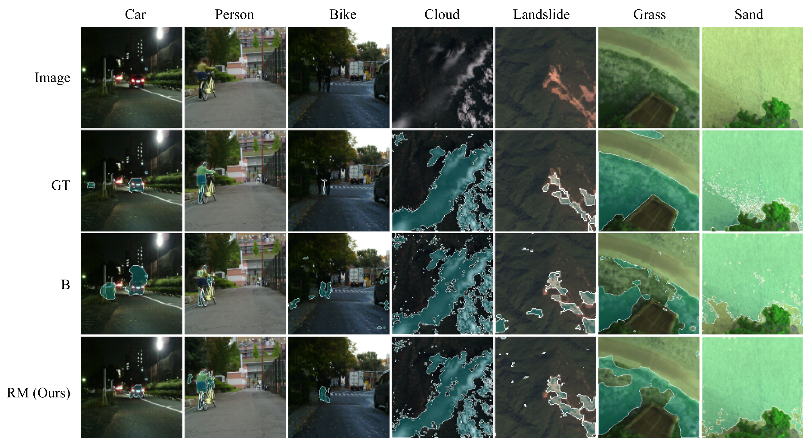

The task of segmentation of multispectral images, which are images with numerous channels or bands, each
capturing a specific range of wavelengths of electromagnetic radiation, has been previously explored in
contexts with large amounts of labeled data. However, these models tend not to generalize well to
datasets of smaller size. In this paper, we propose a novel approach for improving few-shot segmentation
performance on multispectral images using reinforcement learning to generate representations. These
representations are generated as mathematical expressions between channels and are tailored to the
specific class being segmented. Our methodology involves training an agent to identify the most
informative expressions using a small dataset, which can include as few as a single labeled sample,
updating the dataset using these expressions, and then using the updated dataset to perform
segmentation. Due to the limited length of the expressions, the model receives useful representations
without any added risk of overfitting. We evaluate the effectiveness of our approach on samples of
several multispectral datasets and demonstrate its effectiveness in boosting the performance of
segmentation algorithms in few-shot contexts. The code is available at
https://github.com/dilithjay/IndexRLSeg.
Introduction
Multispectral images (MSIs) are extensively used in diverse applications such as environmental
monitoring, crop analysis, and tumor detection. Generally, each channel of a multispectral image capture
unique ranges of wavelengths of light (similar to how RGB images capture red, green, and blue light).
However, collecting large-scale annotated MSI datasets is expensive and time-consuming. This limits the
applicability of deep learning-based segmentation methods in real-world settings. In this paper, we
explore the few-shot setting where only a handful of labeled samples are available, and present IndexRL
— a method that learns mathematical expressions using reinforcement learning to combine MSI bands
effectively for segmentation. These mathematical expressions (a.k.a. spectral indices) can be
interpreted as a form of feature engineering, where the agent learns to create new features from
existing ones. The key contributions of our work are:
We propose a novel application of reinforcement learning for discovering spectral indices that
improve few-shot segmentation performance in multispectral images.
We address the challenging task of few-shot multispectral segmentation which, to the best of our
knowledge, has not been previously explored in the literature in a general context.
We demonstrate the effectiveness of our proposed approach on several datasets by comparing the
performance against several baseline models.
Methodology
The proposed methodology consisting of four main components: (1) Index Generator: Uses
the train set (image-mask pairs) to generate an expression. (2) Index Evaluator: Uses
the generated expression and the original images to create the evaluated indices. (3) Dataset
Updater: Uses the evaluated indices to update the original images. (4) Segmentation
Trainer: Trains a segmentation model using the updated images. We may interpret this
process as follows. The first component identifies the best augmentation for the data. The second
component executes the augmentation on each input image to create its respective single-channel
augmented image. The third component combines each augmented channel with its respective original input
image. In the sections that follow, we discuss the first three components. The fourth component, the
segmentation trainer, can be any multispectral segmentation approach.
Figure 1: The proposed methodology and its four main components. (1) Index Generator
(2) Index Evaluator (3) Dataset Updater (4) Segmentation Trainer.
Experiments and Results
We explore the performance of the proposed approach across several multispectral datasets, MFNet [14],
Sentinel-2 Cloud Mask Catalogue [12], Landslide4Sense [13], and RIT-18 [18]. For MFNet and RIT-18, which
are multiclass segmentation datasets, we evaluate our approach on selected classes (car, person, and
bike on MFNet; grass and sand on RIT-18).
As per Table 1, the proposed method results in a significant improvement in UNet. However, it can be
observed that this advantage decreases slightly with increasing model size. We hypothesize that bigger
models depend relatively less on the input representation.
Dataset
UNet
DeepLabV3
UNet++
Baseline
Ours
Baseline
Ours
Baseline
Ours
car
62.5
67.4 (RM)
55.4
58.2 (RM)
74.8
74.8 (CM)
person
46.4
48.4 (RM)
17.9
25.2 (R)
47.3
48.5 (RM)
bike
37.8
39.8 (RM)
31.1
53.5 (RM)
40.3
36.4 (R)
cloud
80.6
83.3 (RM)
62.0
65.6 (R)
82.3
84.2 (RM)
landslide
38.0
43.1 (RM)
18.7
20.5 (R)
35.9
42.8 (RM)
grass
58.0
73.7 (RM)
66.6
65.6 (R)
60.9
70.3 (RM)
sand
13.1
59.4 (RM)
12.6
41.3 (RM)
25.2
69.2 (RM)
Table 1: The IoU scores of the baseline model against
that of the best dataset updating mode for each dataset class when trained on each model.

Figure 2: Qualitative comparison of segmentation results
Conclusion
In this paper, we presented an approach for improving few-shot multispectral segmentation
performance. We achieve this by using reinforcement learning on a few labeled samples
to generate expressions that define data augmentations. Each generated expression is used
to augment each input image into a single-channel image (a.k.a. an evaluated index). The
results demonstrate that replacing multiple channels of the input image with such evaluated
indices from multiple expressions tends to lead to the best performance improvement.
Citation
If you find this work useful, please consider citing:
@article{jayakody2023few,
title={Few-shot Multispectral Segmentation with Representations Generated by Reinforcement Learning},
author={Jayakody, Dilith and Ambegoda, Thanuja},
journal={arXiv preprint arXiv:2311.11827},
year={2023}
}